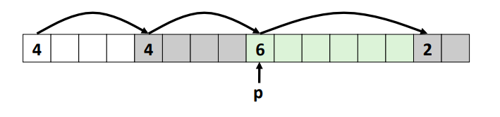
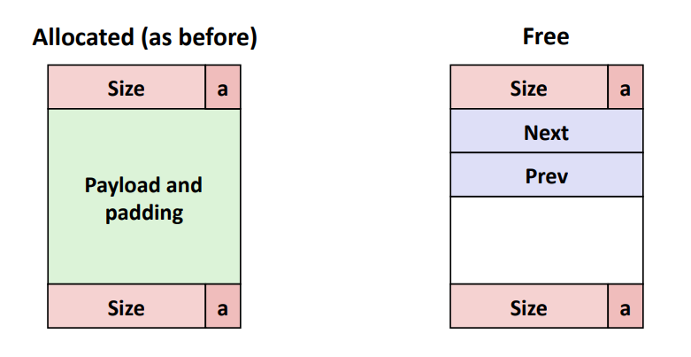
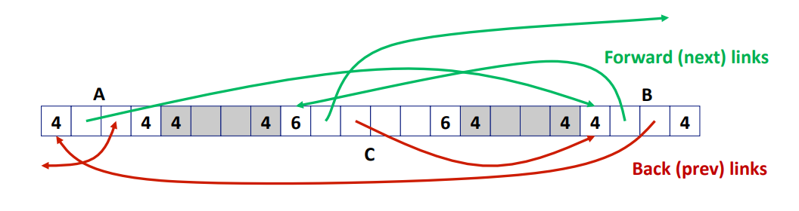
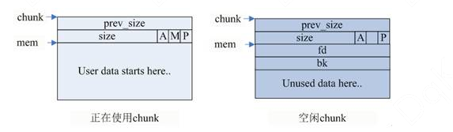

摘要
本文介绍了笔者在做 malloclab 一节的实验报告。该 lab 要求使用 C 语言实现动态内存管理功能，即 malloc,free,realloc 三个函数，完成堆上内存的申请与释放。
理论知识
动态内存管理
在程序虚拟内存空间中，栈是由编译器维护的、用于存放局部变量的区域。栈的空间受限，不能用于存储大型对象（linux
栈只有 8MB），而且局部变量随着函数执行完毕自动回收，这使得栈所存储的变量的生命周期也受到了限制。堆是由程序员维护的、用于保存大型对象的区域。在 C 语言中，可以通过 malloc 申请堆内存，free 释放内存。
动态内存管理的核心是一个分配器，处理到来的内存分配请求，需要考虑以下问题：
给定一个指针，我们如何知道需要释放多少内存？
如何记录未分配的块？
固定大小的块，可以使用 bitmap 记录
一般而言，通用的、大小不定的块，使用空闲链表 记录
实际需要的空间比未分配的空间要小的时候，剩下的空间怎么办？
如果有多个区域满足条件，如何选择？
释放空间之后如何进行记录？
这些问题的核心在于，空闲链表如何组织，以及分配算法怎样选取。
空闲链表有以下几种组织方式：
隐式空闲链表 ，如下图所示。每个块的首部记录了块大小以及空闲标记，相当于使用数组实现的单向链表，同时包含了空闲块和非空闲块。这种方式下，malloc 需要从第一个块开始遍历，最坏 O (n) 才能找到合适的块，n 为块的数量。free 时需要与左右的空闲块合并，左侧的块也需要从头开始遍历才能访问到，也需要 O (n) 时间，性能很差。

显式空闲链表 ，如下图所示。思想是在空闲块中添加前后向指针，指向相邻的空闲块，得到了显式的空闲链表。这样就可以减少 malloc 的复杂度为 O (f)，f 为空闲块的数量。在空闲块的末尾，添加了一个尾部记录了块的大小，并在每个块的首部记录了前一个块是否空闲，这样可以在 O (1) 的时间内完成相邻空闲块的合并。


分隔空闲链表 ，在显式空闲链表的基础上，根据空闲块的大小，拆分到不同的链表中。当新请求到来时，只需要在满足大小的链表中搜索即可，进一步减少了 malloc 的常数。
malloc
malloc 的原型为：
1 void *malloc (size_t __size)
malloc ()
并不是系统调用，而是 C 语言库函数，内部通过 brk 或者 mmap 的系统调用来扩展虚拟内存空间。malloc 使用了显式空闲链表的方法，块的结构如下所示：

不同的是，空闲块没有记录尾部，而是在首部新加了一个字段存储前一个块的大小。由于 malloc 返回的地址总是 8 字节对齐的，因此块的大小也会对齐到 8 的整数倍。这意味着 size 的后 3 位永远是 0，这里就是使用了这三位来存储额外的信息：块属于主分配区或者非主分配区（A），前一个块是否空闲（P），从哪个内存区域获得的虚拟内存（M）。这些空闲块构成了内存池，当新请求到来时，malloc 会尝试先从内存池分配，如果分配成功就无需系统调用，失败则再通过 brk 或者 mmap 调用申请内存。free 时同理，先归还到内存池，当堆顶空闲内存超出阈值时，再通过 sbrk 归还给系统。
malloc 的详细介绍可以参考 malloc 和 free 的实现原理解析
- JackTang's Blog
(jacktang816.github.io) 。值得注意的是，malloc 只申请了虚拟内存，也就是说，操作系统仅为这些地址创建了页表项，但没有将它们与物理地址关联起来。当这些内存被访问到之后，才会触发缺页异常，申请物理内存。
代码实现
思路
我使用了隔离显式空闲链表的方法，使用多个空闲链表存储不同大小的空闲块，malloc 时只需要在 \(\ge
size\) 的链表中查找，来达到减小常数的效果。在块内部的 header 中，存储大小、本块与前一个块的空闲信息。在空闲块里，额外存储指向空闲链表前驱和后继的指针。
这个大思路下，两个重要的问题是，空闲链表与大小的关系如何映射，空闲链表的头部存储在哪里？对于第一个问题，我参考 linux 的伙伴系统，不同链表存储的块大小呈倍数关系，例如第一条链存 [8,16) Bytes 的块，第二条链存 [16,32) Bytes 的块，以此类推。这样的优点是，链表的数量不会太多，最多只有 \(O(logn)\) 条链，缺点是不同链的块数量不够均匀。第二个问题，我选择存储在了堆的首部，在 mm_init 时对其初始化。
思路确定好之后，可以先拆分一些小的宏函数，来实现常用的功能。
宏定义
我将常用操作封装了很多宏函数，如下所示。这些宏函数的命名都很直观，例如 HEADER 用于读取块的头部信息，HAS_PRED_BLOCK 是判断一个块有没有前向相邻的块（是否达到了边界）、SUCC_BLOCK 用于获取后一个块的起始地址。这些宏是随着代码的编写逐渐补充的。
与函数相比，宏在预处理期被展开，没有函数调用的开销，相当于被内联的函数，适合封装一些指针运算逻辑，这些代码往往需要复用。由于宏的可读性差、参数类型不直观、容易出现优先级问题，不推荐封装很复杂的逻辑。在我的实践中，也是针对参数类型取不同的名字，例如 header_p 意味着一个 header
* 的参数，address 代表 void
* 等，来避免类型误用的问题。
1 2 3 4 5 6 7 8 9 10 11 12 13 14 15 16 17 18 19 20 21 22 23 24 25 26 27 28 29 30 31 32 33 34 35 36 37 38 39 40 41 42 43 44 45 46 47 48 49 50 51 52 53 #define ALIGNMENT 8 #define ALIGN(size) (((size) + (ALIGNMENT - 1)) & ~0x7) #define SIZE_T_SIZE (ALIGN(sizeof(size_t))) #define header_t size_t #define HEADER_T_SIZE SIZE_T_SIZE #define footer_t header_t #define FOOTER_T_SIZE HEADER_T_SIZE #define uint32 unsigned long #define SEG_TABLE_SIZE 16 #define MIN_BLOCK_SIZE HEADER_T_SIZE #define MIN_FREE_BLOCK_SIZE 24 static void **seg_table;static void *block_start;#define FREE_BIT 0 #define PRED_FREE_BIT 1 #define HEADER(address) (*(header_t *)(address)) #define FOOTER(address) (HEADER(address)) #define GET_OPTIONS(header) ((header) & (ALIGNMENT - 1)) #define GET_SIZE(header) ((header)-GET_OPTIONS(header)) #define GEN_HEADER(size, free, pred_free) ((size) | ((free) << (FREE_BIT)) | ((pred_free) << (PRED_FREE_BIT))) #define IS_FREE(header) (((header)) & (1 << FREE_BIT)) #define IS_PRED_FREE(header) ((header) & (1 << PRED_FREE_BIT)) #define HAS_PRED_BLOCK(address) ((uint32)(address) > (uint32)block_start) #define SUCC_BLOCK(address) ((void *)((char *)(address) + GET_SIZE(HEADER(address)))) #define HAS_SUCC_BLOCK(address) ((uint32)SUCC_BLOCK(address) < (uint32)mem_heap_hi()) #define SET_SIZE(header_p, size) (*(header_p) = (size) | GET_OPTIONS(*(header_p))) #define SET_FREE(header_p) (*(header_p) |= (1 << FREE_BIT)) #define SET_PRED_FREE(header_p) (*(header_p) |= (1 << PRED_FREE_BIT)) #define SET_BUSY(header_p) (*(header_p) &= ~(1 << FREE_BIT)) #define SET_PRED_BUSY(header_p) (*(header_p) &= ~(1 << PRED_FREE_BIT)) #define PREV_OFFSET HEADER_T_SIZE #define NEXT_OFFSET (HEADER_T_SIZE + sizeof(void *)) #define PPREV(address) ((void **)((char *)(address) + PREV_OFFSET)) #define PNEXT(address) ((void **)((char *)(address) + NEXT_OFFSET))
mm_init
申请一块内存用于存储隔离空闲链表的头部 seg_table，并初始化。
1 2 3 4 5 6 7 8 9 10 11 12 13 14 int mm_init (void ) seg_table = mem_heap_hi(); mem_sbrk(SEG_TABLE_SIZE * sizeof (void *)); for (int i = 0 ; i < SEG_TABLE_SIZE; i++) { seg_table[i] = NULL ; } block_start = seg_table + SEG_TABLE_SIZE; return 0 ; }
mm_malloc
优先从空闲块中查找 \(\ge
size\) 的块，采用首次适应的策略，若：
查找失败，则通过 mem_sbrk 申请新内存
查找成功，选择是否对块进行拆分，返回
1 2 3 4 5 6 7 8 9 10 11 12 13 14 15 16 17 18 19 20 21 void *mm_malloc (size_t size) int newsize = ALIGN(size + SIZE_T_SIZE); void *address = fetch_free_block_ge(newsize); if (address != NULL ) { return (void *)((char *)address + SIZE_T_SIZE); } void *p = mem_sbrk(newsize); if (p == (void *)-1 ) return NULL ; else { *(size_t *)p = newsize; return (void *)((char *)p + SIZE_T_SIZE); } }
这段代码的核心在于 fetch_free_block_ge 函数，代码如下。它的逻辑为，先获取 size 对应的空闲链表，依次向后遍历，直到找到一个大小符合的空闲块。通过 remove_free_block 函数将其从空闲链表移除，split_block 函数对其进行拆分。
1 2 3 4 5 6 7 8 9 10 11 12 13 14 15 16 17 18 19 20 21 22 23 24 25 26 27 28 29 30 31 void *fetch_free_block_ge (size_t size) int index = get_seg_index(size); size_t bsize; for (; index < SEG_TABLE_SIZE; index++) { for (void *address = seg_table[index]; address != NULL ; address = *PNEXT(address)) { bsize = GET_SIZE(HEADER(address)); if (bsize >= size) { remove_free_block(address); split_block(address, size); SET_BUSY((header_t *)address); if (HAS_SUCC_BLOCK(address)) { SET_PRED_BUSY((header_t *)SUCC_BLOCK(address)); } return address; } } } return NULL ; }
代码中用到的工具函数代码如下。需要注意的是，在 remove_free_block 中，由于空闲块的前驱可能是链头，不是常规的空闲块，二者的读写模式有所差异，需要做区分。
1 2 3 4 5 6 7 8 9 10 11 12 13 14 15 16 17 18 19 20 21 22 23 24 25 26 27 28 29 30 31 32 33 34 35 36 37 38 39 40 41 42 43 44 45 46 47 48 49 50 51 52 53 54 55 56 57 58 59 60 61 62 63 64 65 66 67 68 69 70 71 72 73 74 75 76 77 78 79 80 81 82 83 84 85 86 87 88 89 90 91 int get_seg_index (size_t size) for (int index = SEG_TABLE_SIZE - 1 ; index >= 0 ; index--) { if (size >= (MIN_BLOCK_SIZE << index)) { return index; } } printf ("get_seg_index ERROR! size %zu\n" , size); return -1 ; } void remove_free_block (void *address) header_t cur_header = HEADER(address); size_t size = GET_SIZE(cur_header); int index = get_seg_index(size); void **pprev = PPREV(address); void **pnext = PNEXT(address); void **seg_head = seg_table + index; if (*seg_head == address) { *seg_head = *pnext; if (*pnext != NULL ) { *PPREV(*pnext) = seg_head; } } else { *PNEXT(*pprev) = *pnext; if (*pnext != NULL ) { *PPREV(*pnext) = *pprev; } } } int split_block (void *address, size_t size) header_t header = HEADER(address); size_t bsize = GET_SIZE(header); if (bsize >= size + MIN_FREE_BLOCK_SIZE) { void *rest = (char *)address + size; SET_SIZE((header_t *)address, size); init_header_footer(rest, bsize - size, 1 , IS_FREE(header)); insert_free_block(rest); return 1 ; } return 0 ; } void init_header_footer (void *address, size_t size, int free , int pred_free) header_t header = GEN_HEADER(size, free , pred_free); *(header_t *)address = header; if (free ) { *(footer_t *)((char *)address + size - FOOTER_T_SIZE) = header; } }
mm_free
free 需要做以下几件事情，拆分为独立的宏或函数
将块标记为空闲：SET_FREE 与 SET_PRED_FREE
与相邻空闲块合并：coalesce_block
添加到空闲链表：insert_free_block
代码如下，根据 ptr 获取块的地址，获取相邻空闲块的地址，进入合并逻辑。
1 2 3 4 5 6 7 8 9 10 11 12 13 14 15 16 17 18 void mm_free (void *ptr) void *predecessor; void *successor = NULL ; void *address = (char *)ptr - HEADER_T_SIZE; header_t header = HEADER(address); predecessor = HAS_PRED_BLOCK(address) && IS_PRED_FREE(header) ? pred_free_block(address) : NULL ; if (HAS_SUCC_BLOCK(address)) { successor = SUCC_BLOCK(address); SET_PRED_FREE((header_t *)successor); successor = IS_FREE(HEADER(successor)) ? successor : NULL ; } coalesce_block(predecessor, address, successor); }
核心在于 coalesce_block 函数，计算合并后块的总大小，将其插入到对应的空闲链表中。
1 2 3 4 5 6 7 8 9 10 11 12 13 14 15 16 17 18 19 20 21 22 23 24 25 26 27 28 29 30 31 32 33 34 35 36 37 38 39 40 41 42 43 44 45 46 47 48 49 50 51 52 53 54 55 56 57 void coalesce_block (void *predecessor, void *cur, void *successor) header_t cur_header = HEADER(cur); if (predecessor != NULL ) { remove_free_block(predecessor); header_t header = HEADER(predecessor); size_t size = GET_SIZE(header) + GET_SIZE(cur_header); if (successor != NULL ) { size += GET_SIZE(HEADER(successor)); remove_free_block(successor); } init_header_footer(predecessor, size, 1 , 0 ); insert_free_block(predecessor); return ; } size_t size = GET_SIZE(cur_header); if (successor != NULL ) { size += GET_SIZE(HEADER(successor)); remove_free_block(successor); } init_header_footer(cur, size, 1 , 0 ); insert_free_block(cur); } void insert_free_block (void *address) size_t cur_header = *(size_t *)address; size_t size = GET_SIZE(cur_header); int index = get_seg_index(size); void **pprev = PPREV(address); void **pnext = PNEXT(address); *pprev = seg_table + index; *pnext = seg_table[index]; void *old = seg_table[index]; seg_table[index] = address; if (old != NULL ) { *PPREV(old) = address; } }
mm_realloc
朴素的 realloc 可以这样实现：mm_malloc 新的内存，memcpy 将原内容拷贝到内存，mm_free 掉原本的内存。这种方法可以工作，但有以下问题：
时间开销：耗时为三部分耗时之和
空间开销：引发内存碎片
可以明确的是，针对通用的情况，上述逻辑是正确合理的，但是在某些情况下，可以做优化，例如：
realloc 用于减少块的大小，此时无需 mm_malloc 与 memcpy，可以直接返回，或者拆分小的空闲块后再返回原有块的后方存在空闲块，二者合并后满足大小要求。相当于就地完成了 malloc，省去了 memcpy。
针对这两种情况，可以编写如下的代码
1 2 3 4 5 6 7 8 9 10 11 12 13 14 15 16 17 18 19 20 21 22 23 24 25 26 27 28 29 30 31 32 33 34 35 36 37 38 39 40 41 42 43 44 45 46 void *mm_realloc (void *ptr, size_t size) void *address = (char *)ptr - HEADER_T_SIZE; size = ALIGN(size + SIZE_T_SIZE); header_t header = HEADER(address); size_t old_size = GET_SIZE(header); if (old_size > size) { split_block(address, size); return (char *)address + HEADER_T_SIZE; } if (HAS_SUCC_BLOCK(address)) { void *succ = SUCC_BLOCK(address); header_t succ_header = HEADER(succ); size_t succ_size = GET_SIZE(succ_header); if (IS_FREE(succ_header) && old_size + succ_size >= size) { remove_free_block(succ); SET_SIZE((header_t *)address, old_size + succ_size); split_block(address, size); return (char *)address + HEADER_T_SIZE; } } void *oldptr = ptr; void *newptr; size_t copySize; newptr = mm_malloc(size); if (newptr == NULL ) return NULL ; copySize = *(size_t *)((char *)oldptr - SIZE_T_SIZE); if (size < copySize) copySize = size; memcpy (newptr, oldptr, copySize); mm_free(oldptr); return newptr; }
结果与总结
使用 mdriver 评估，得到 87 分，结果如下：
1 2 3 4 5 6 7 8 9 10 11 12 13 14 15 16 17 18 Results for mm malloc: trace valid util ops secs Kops 0 yes 98% 5694 0.000160 35677 1 yes 98% 5848 0.000198 29550 2 yes 98% 6648 0.000217 30608 3 yes 99% 5380 0.000140 38346 4 yes 99% 14400 0.000229 62772 5 yes 91% 4800 0.000250 19215 6 yes 90% 4800 0.000260 18462 7 yes 55% 12000 0.000213 56259 8 yes 51% 24000 0.000432 55543 9 yes 17% 14401 0.000527 27300 10 yes 57% 14401 0.000268 53695 Total 78% 112372 0.002895 38812 Perf index = 47 (util) + 40 (thru) = 87/100 correct:11 perfidx:87
虽然没有拿到满分，但整体做完还是非常酣畅淋漓的体验。从学完之后满腹经纶但又无从下手，到摸索如何设计与抽象函数，再到被各种段错误折磨，最后豁然开朗、茅塞顿开，用 “酣畅淋漓” 这四个字形容在合适不过了！
实验可能遇到的问题
traces 路径问题
在 config.h 中，修改 TRACEDIR 为相对路径。
1 #define TRACEDIR "./traces/"
asm/errno.h: No such file
or directory
参见 stackoverflow：linux
- asm/errno.h: No such file or directory - Stack Overflow
1 ln -s /usr/include/asm-generic /usr/include/asm
段错误
为 GCC 添加 -g 参数创建用于调试的评测文件，使用 gdb 启动程序，发生段错误后输出 bt，即 backtrace 命令，即可打印出堆栈和报错行数，还可以打印不同变量的值。建议关闭 -O2 选项来避免变量被优化了无法查看值。
参考